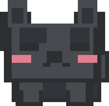

欢迎使用 Clash for Young
只需要一步：粘贴你的订阅链接。
没有链接？也可以 （Clash / mihomo 的 .yaml 配置或订阅文件）。

Clash for Young只需要一步：粘贴你的订阅链接。
没有链接？也可以 （Clash / mihomo 的 .yaml 配置或订阅文件）。
没有单独设置的网站都走这里。国内网站始终直连。分组可以在「设置 → 节点分组」里修改。
给每个网站选择走向。自动 = 跟随首页的默认地区（国内网站直连）。改完立即生效，可以点「检查」确认。
按域名、关键词或 IP 段指定走向。从上到下依次匹配，优先于上面的网站设置。
可以添加多个订阅，所有订阅的节点合在一起使用、一起分组。链接订阅每 6 小时自动更新；从文件导入的订阅不会自动更新。
普通模式通过系统代理工作，浏览器和大部分软件都够用。增强模式会接管电脑上所有程序的网络，包括终端命令、游戏、不认系统代理的软件。
在意隐私的话建议开启：普通模式下浏览器的 WebRTC（网页视频通话用的技术）会绕过代理，网站能看到你的真实 IP；增强模式会把它和 IPv6 流量一起接管。
输入网址，看它实际命中了哪条规则、走了哪个节点。
端口被其他代理软件占用时，软件会自动换一个空闲端口。
Clash for Young · 基于 mihomo 内核 · GPL-3.0